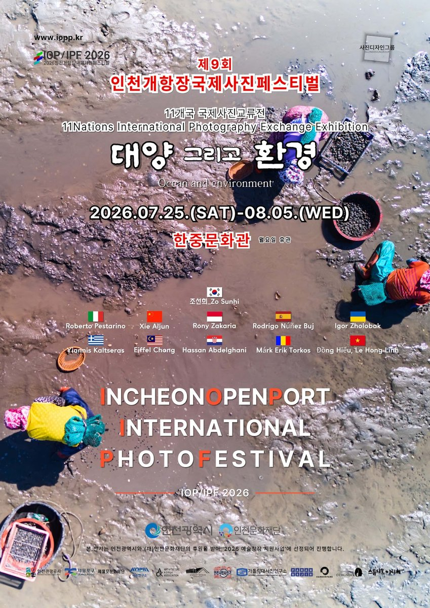
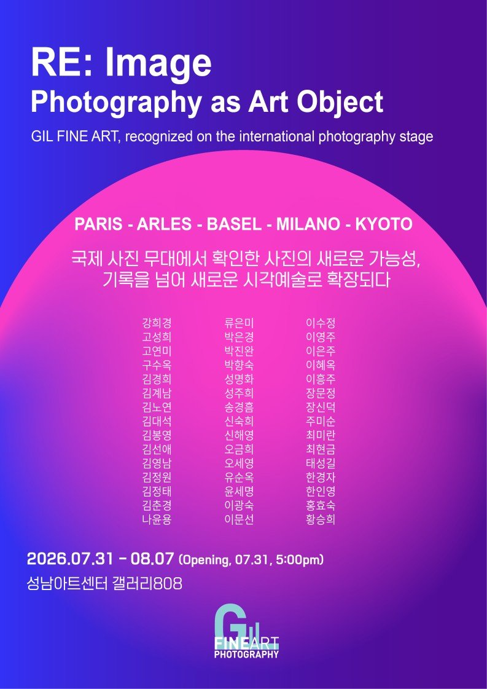
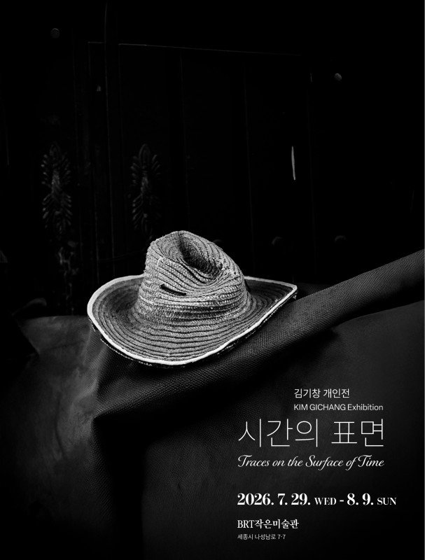
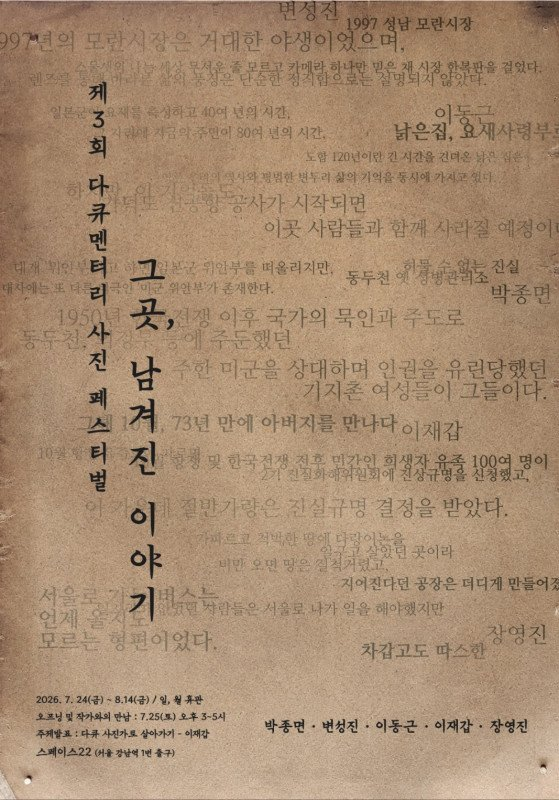
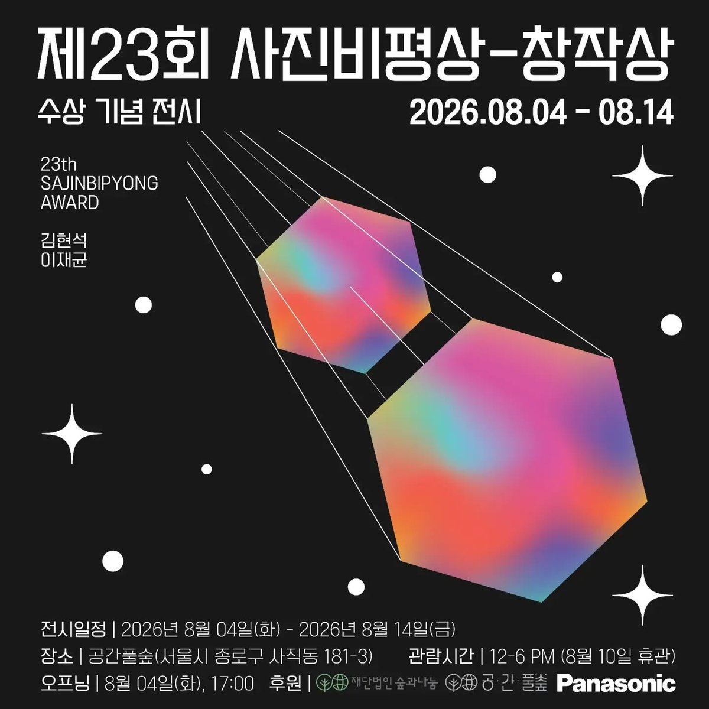
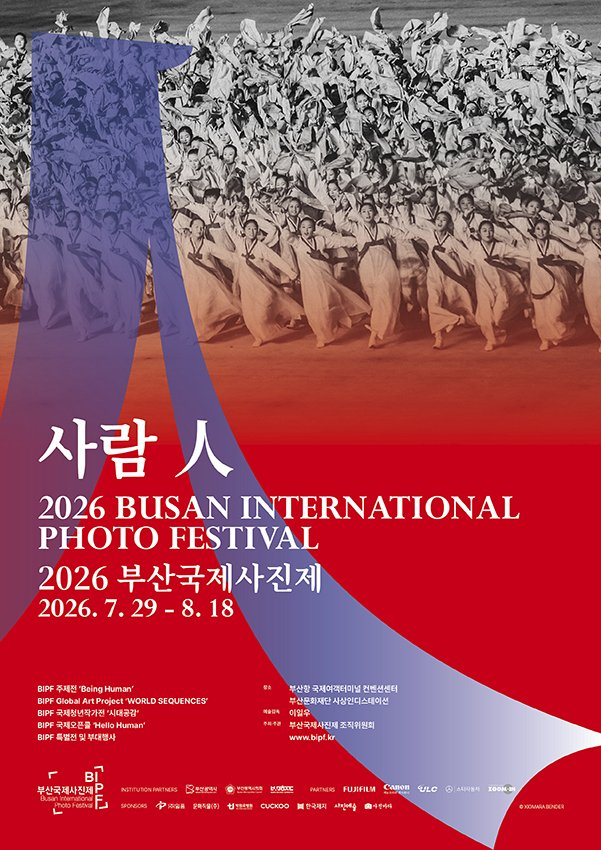
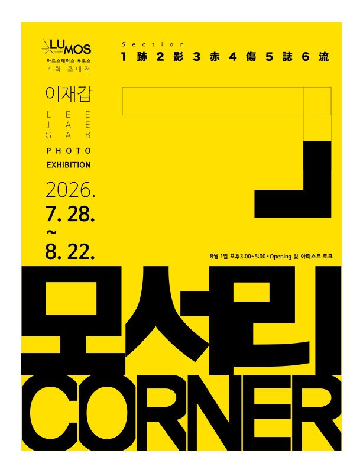
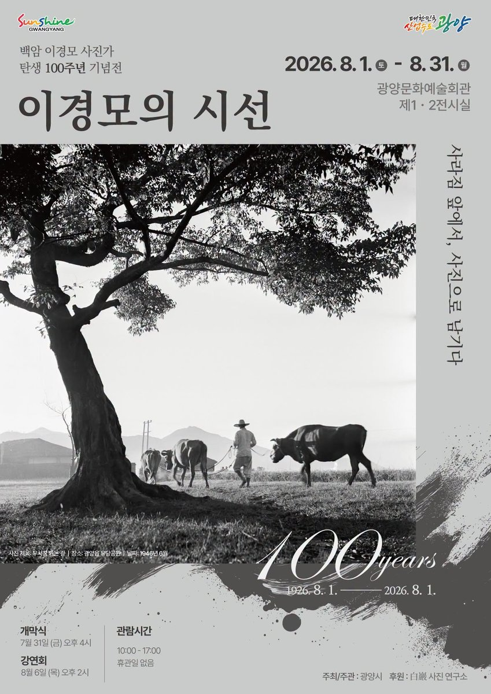
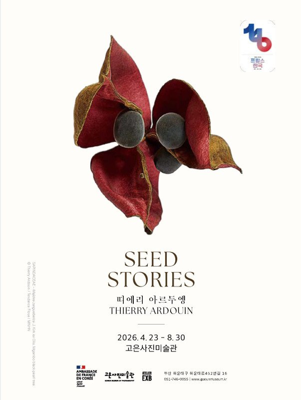

"사라지는 것을 붙드는 일. 이달의 전시 목록을 늘어놓고 보니 그 문장이 자꾸 겹쳐 읽힌다."
8월의 사진 전시에는 공통된 얼굴이 있다. 사라지는 장소, 지워지는 공동체, 잊히는 기억. 한 세기를 기록한 사진가의 100주년 회고전이 광양에서 열리고, 재개발 지역의 폐가와 남겨진 이야기를 좇는 전시가 서울과 세종에서 나란히 선다. 그 옆으로 부산과 인천의 국제 사진제가 여름을 채운다. 마감이 급한 것부터 적는다.
이번 주에 닫힌다

제9회 인천개항장국제사진페스티벌, 〈조류 그 너머 Beyond the Tide〉
인천 개항장 일대 (한중문화관·화교역사관·상상플랫폼·관동갤러리 등). 7.25 – 8.5.
해양도시라는 조건에서 출발해 기후위기, 해양오염, 생물다양성으로 시선을 넓히는 국제 사진축제. 전시장 하나가 아니라 개항장 거리 전체가 무대다. 근대 건축물 사이를 걸으며 보는 구성이라, 오후 늦게 가서 해질 무렵까지 걷는 동선을 추천한다.

길파인아트, 〈RE-Image: 사진의 연금술〉
성남아트센터 갤러리808. 7.31 – 8.7.
사진을 평면 이미지에 두지 않고 프린트의 물성, 오브제, 설치로 확장한 동시대 파인아트 사진전. "사진이란 무엇인가"를 인화지 바깥에서 다시 묻는다.

김기창, 〈시간의 표면〉
BRT작은미술관 (세종). 7.29 – 8.9.
재개발 지역의 폐가와 오래 쓰인 사물을 흑백으로 기록했다. 벽지가 뜯긴 자리, 손때가 남은 문고리. 사람이 떠난 뒤에도 남아 있는 표면이 시간을 대신 말한다.
다음 주까지

제3회 다큐멘터리 사진 페스티벌, 〈그곳, 남겨진 이야기〉
스페이스22 (서울). 7.24 – 8.14.
박종면·변성진·이동근·이재갑·장영진 다섯 사진가가 사라지는 장소와 공동체를 기록했다. 다큐멘터리 사진이 오래 해온 일을 정직하게 보여주는 자리다. 이 목록에서 이재갑의 이름을 한 번 더 만나게 되는데, 대구에서 열리는 개인전과 나란히 보면 한 사진가의 두 얼굴이 보인다.

제23회 사진비평상 창작상 수상전 — 김현석·이재균
공간풀숲 (서울). 8.4 – 8.14.
개발로 변해가는 도시를 다루는 김현석과, 전쟁과 역사적 기억을 다루는 이재균. 신진 사진가 두 사람의 수상전이 오늘 시작한다.

제10회 부산국제사진제, 〈사람 人〉
부산항국제전시컨벤션센터 · 사상인디스테이션. 7.29 – 8.18.
올해로 열 번째. 인간과 시대를 주제로 국내외 사진가들의 작업을 모은 대규모 국제 사진제다. 전시장이 두 곳으로 나뉘어 있으니 시간을 넉넉히 잡는 편이 좋다. 부산까지 가는 김에 해운대의 고은 깁슨 사진미술관(랄프 깁슨 상설)까지 묶으면 하루가 알차다.
8월을 건너간다

이재갑, 〈모서리 CORNER〉
아트스페이스 루모스 (대구). 7.28 – 8.22.
오래 사회적 다큐멘터리를 해온 작가가 카메라를 자기 쪽으로 돌렸다. 기록에서 기억으로, 바깥에서 내면으로 이동한 신작. 위의 다큐멘터리 사진 페스티벌과 함께 보면 한 사진가가 지금 어디에 서 있는지가 또렷해진다.

이경모의 시선, 〈사라짐 앞에서, 사진으로 남기다〉
광양문화예술회관 제1·2전시실. 8.1 – 8.31.
이경모 탄생 100주년 기념전. 한국 근현대사의 격동과 그 안에서 살아간 사람들의 삶을 담은 기록사진이다. 한 사람이 백 년 전에 태어나 남긴 사진을 백 년 뒤에 본다는 것. 이달의 전시 중 가장 긴 시간을 건너온 사진들이다. 8월 한 달 내내 열려 있다.

띠에리 아르두엥 Thierry Ardouin, 〈Seed Stories〉
고은사진미술관 (부산). 4.23 – 8.30.
세계 각지에서 모은 씨앗을 현미경으로 촬영해 한 점씩 초상처럼 세웠다. 87점 규모. 손톱보다 작은 씨앗이 화면 안에서 조각처럼 보인다. 봄에 시작해 여름 끝까지 이어지는 전시라, 부산국제사진제와 같은 날 묶기 좋다.
동선 메모
서울은 스페이스22(8.14)와 공간풀숲(8.14)이 같은 날 닫힌다. 두 곳 모두 다큐멘터리 계열이라 하루에 묶어도 흐름이 끊기지 않는다. 부산은 사진제(8.18)와 고은사진미술관(8.30)을 함께. 대구는 루모스 한 곳이지만 8월 22일까지라 여유가 있다. 인천 개항장은 8월 5일까지니 내일이 마지막이다.
목록을 다시 보면 대부분 사라지는 것들에 관한 전시다. 재개발로 없어지는 동네, 잊히는 공동체, 100년 전의 얼굴, 손톱만 한 씨앗. 사진은 결국 남기는 일이라는 걸 8월의 전시들이 나란히 말하고 있다.